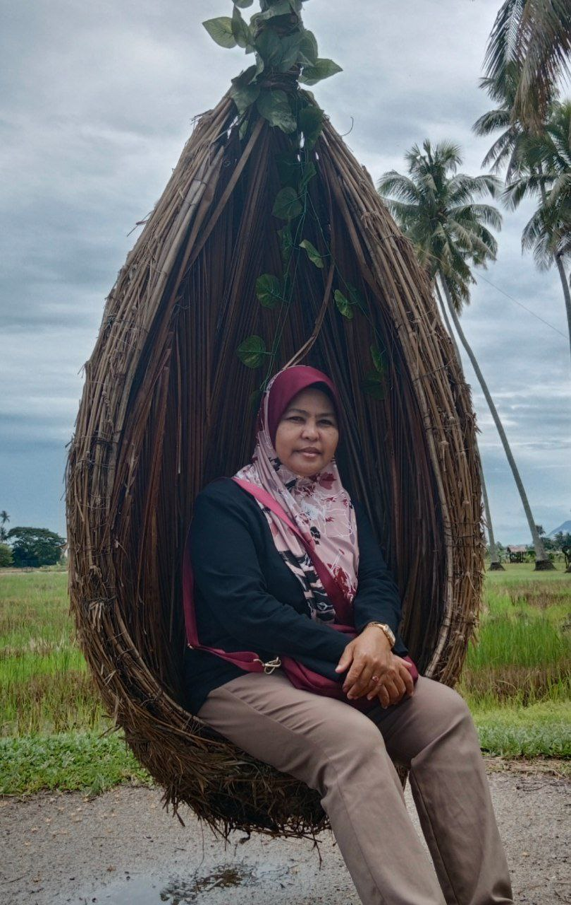
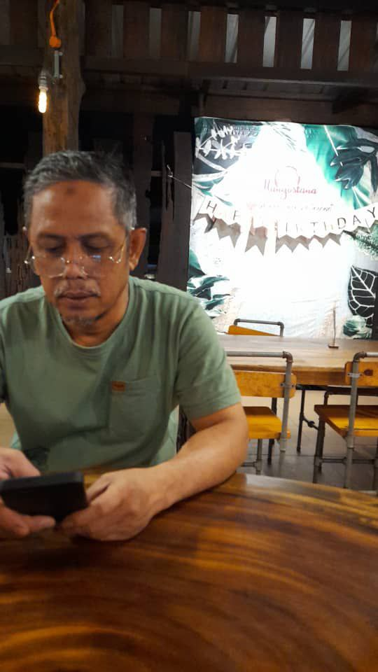
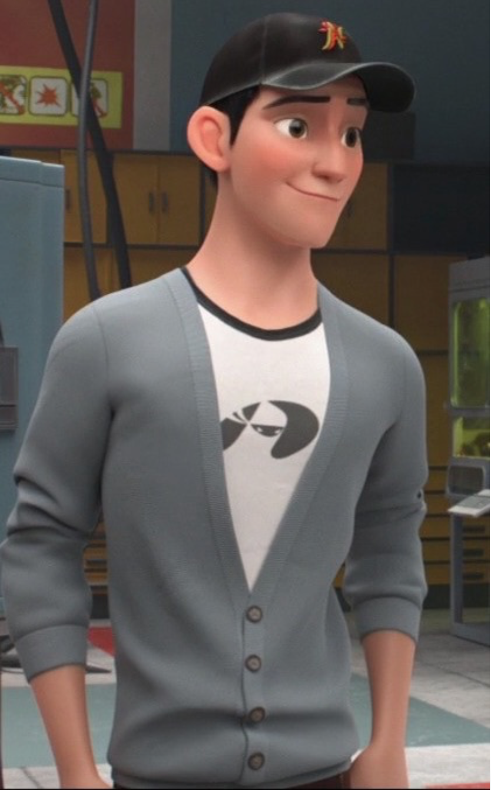
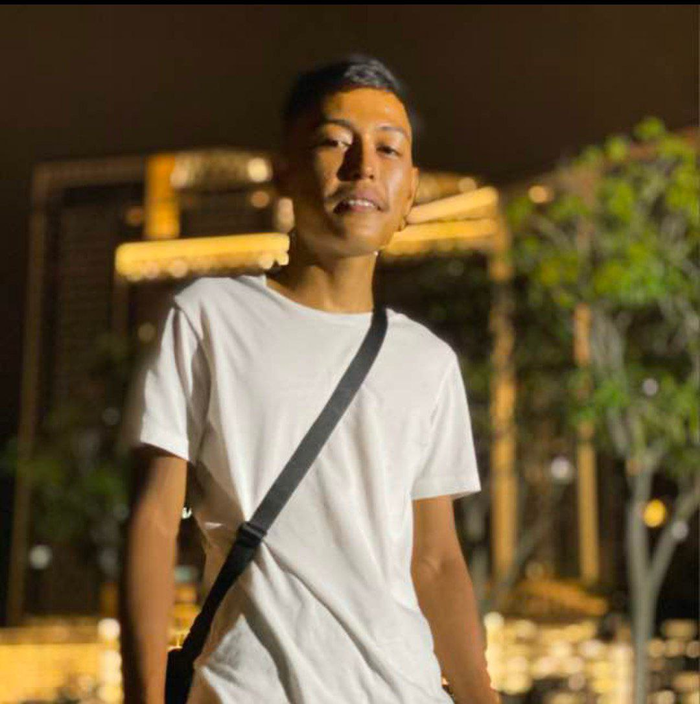

| FAMILY |
| FAMILY |
Let me tell you all about my family. I live with my mother, my father and my brother in a village in Sungai Setar Besar, in Penang. My mother's name is HASLINDA BT. MAT ISA who comes from the village of Tanjung Berembang, Penang. My mother works as a trader. She is in her early fifties and has given birth to 3 children. A woman who is strong and resilient in facing life's challenges.
Next, my father's name is MOHAMAD FOUZI B. BAKAR. He comes from the same village where I grew up, which is the village of Sungai Setar Besar, Penang. My father was in his early 50s and worked as a welding specialist in an iron welding shop run by Chinese people. He is a brave person and always protects the family in any problem.
Next, my brother MOHAMAD ZAHIN B. MOHAMAD FOUZI is a good brother and is the person who is always close to me as the youngest child in this family.
|  | BIODATA |
|
My mom is a versatile mom. Since I was little I always saw my mother doing many things to earn income to help my father. Mom, when I was little, I followed my mom looking for nipah leaves to tie into the roof. In addition, my mother also makes cakes to sell in front of my grandmother's house in the evening. All the cakes that my mother cooks are delicious and my favorite cakes are all of them!!! LOL. now my mother is running a breakfast restaurant near my house together with my father. |
|  | BIODATA |
|
My father is an iron welding worker. My father is great because the job is not easy for unskilled people to do. When I was in primary school my father would always send me to the religious school in the evening while he returned home for lunch. The smell of iron sticking to my father's shirt calmed me down a lot while riding the motorcycle with him. Many of my father's works that I really admire like the iron frame for the roof of my house was made by my father alone. In addition, my father was also one of the workers who was in charge of welding at one of the landmarks in Penang's old city field a few years ago. Due to his advanced age, my father quit his job and chose to run a breakfast restaurant with my mother. |
|  | BIODATA |
|
This picture is the character Tadashi from the cartoon big hero 6. I chose this character picture to replace my brother's picture because I always remember my brother when I see this character. My eldest brother who died when he was 17 years old was involved in a road accident with his friend. I don't have many memories with him because I was very young when the accident happened. But he is a loving and very good brother to me. |
|  | BIODATA |
|
He is my second brother. Both of us used to fight and joke a lot when we were kids. He is a good brother and always helps me to solve a problem. My brother is a hard worker, he always helps me to clean the house and wash the dishes if he has free time. My brother always gives me chocolate and ice cream. However, my brother is a quiet person, he doesn't talk to new people and it's hard to express his problems to the family. |